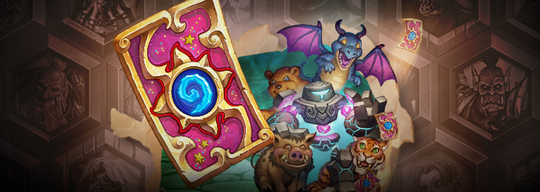
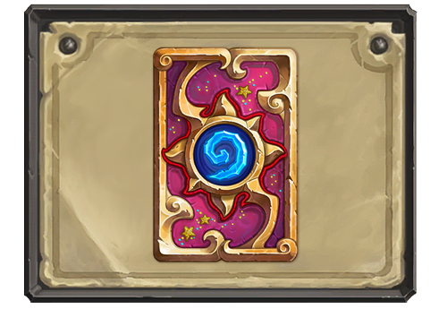

Февральский сезон рейтинговых игр: неудержимый блеск

Черное железо? Шипы? ЧЕРЕПУШКИ? Эх! Все это удел неуверенных в себе. Величайшие воины знают, что в бой нужно вступать со стилем. И есть только одна вещь, которая поднимет уровень стиля выше 9000 — блестки! Ваши соперники должны видеть надвигающуюся на них судьбу (то есть ВАС!) издалека. Добейтесь такого сногсшибательного эффекта с помощью новой рубашки для карт «Блеск»! Играйте в февральском сезоне рейтинговых игр, покажите всем, насколько стильным может быть игрок и его колода.
Рубашки для карт позволяют изменить изображение на обратной стороне карты и продемонстрировать другим игрокам свои достижения. Рубашку «Блеск» можно получить по достижении 20-го ранга в режиме рейтинговых игр (в вольном или стандартном формате). Новая рубашка будет добавлена в вашу коллекцию в конце февральского сезона рейтинговых игр — вы найдете ее в сундуке с сокровищами.

Содержимое сундука зависит от того, насколько высокого ранга вам удастся достичь в ходе сезона. В сундуках, помимо сезонной рубашки для карт, вы найдете чародейную пыль и даже золотые карты, причем получить такой сундук можно, играя как в вольном, так и в стандартном формате. Заработать можно не более одного сундука за сезон рейтинговых игр, при этом его содержимое зависит от наивысшего ранга, которого вам удалось достичь в любом из двух форматов.
И не забудьте: чем выше будет ваш ранг в рейтинговых играх, тем больше звездочек вы получите в следующем сезоне! Количество звездочек, заработанных в режиме рейтинговых игр, зависит от ваших успехов в ходе предыдущего сезона. За каждый ранг вы будете получать по одной звездочке. Тем не менее, даже если полученных звездочек вам сразу хватит для достижения 20-го ранга (или более высокого), то вам все равно потребуется зайти в игру в ходе сезона, чтобы получить награду.
Продемонстрируйте оппонентам в феврале свой блестящий стиль и неотразимый внешний вид!